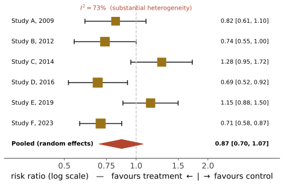
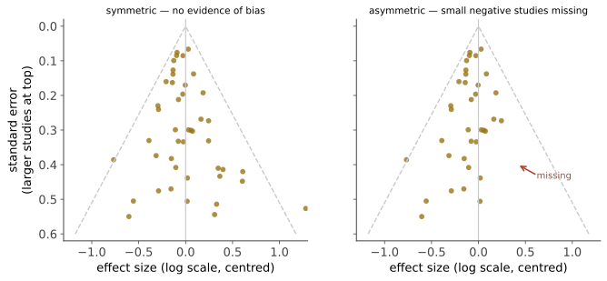

本页目录
循证 IV · 系统综述、meta 分析与 GRADE
单项试验很少是最终答案。系统综述是把某个问题上的全部证据按预设规则收集、评价、综合的过程；meta 分析是其中的定量合并步骤。但"meta 分析"这个标签本身不保证质量——垃圾进、垃圾出，而且合并会让垃圾看起来更精确。
1. 系统综述 vs 叙述性综述
| 系统综述 | 叙述性综述 | |
|---|---|---|
| 问题 | 预先定义（PICO） | 宽泛 |
| 检索 | 预设策略、多库、可复现 | 作者挑选 |
| 纳入 | 预设标准、双人筛选 | 主观 |
| 质量评价 | 系统工具（RoB 2、ROBINS-I） | 常无 |
| 综合 | 定量或定性、按规则 | 叙述 |
| 主要偏倚 | 受纳入研究限制 | 作者的既有立场 |
PICO：Population、Intervention、Comparison、Outcome。先写清 PICO 再检索，是系统综述与"找证据支持我的观点"的分水岭。
2. 森林图：怎么读

读森林图的顺序：① 先看各研究的区间是否大体重叠（异质性）；② 再看菱形是否跨过无效线；③ 看菱形的宽度（精度）；④ 看权重分布（是否被一两项大研究主导）；⑤ 回头看这些研究是否真的在回答同一个问题。
3. 异质性：合并之前必须问的问题
三种异质性：临床（人群、干预、结局定义不同）、方法学（设计与偏倚风险不同）、统计学（效应估计的差异超过随机误差）。
度量：
\(I^2\) 解释为"效应变异中由真实差异而非抽样误差造成的比例"。粗略档位：< 40% 可能不重要；30–60% 中等；50–90% 显著；> 75% 相当大。
两条常见误用：① \(I^2\) 不是绝对量——它依赖研究内精度，大样本研究多时 \(I^2\) 会偏高；② \(I^2\) 低不等于可以合并——临床异质性（合并了完全不同的人群）是 \(I^2\) 看不到的。
固定效应 vs 随机效应模型：
- 固定效应假设所有研究估计同一个真值，差异全来自抽样误差；
- 随机效应假设各研究的真值本身来自一个分布，合并的是这个分布的均值；给小研究更多相对权重，置信区间更宽。
实践建议：异质性明显时用随机效应，并同时报告预测区间（预测区间回答"下一项类似研究可能落在哪里"，通常比置信区间宽得多，也更诚实）。若异质性大到无法解释，正确的做法可能是不合并，而只做定性综合。
亚组与 meta 回归用于解释异质性，但它们是观察性的（研究层面的比较），受生态学谬误影响——研究层面的关联不能直接推到个体层面。
4. 发表偏倚的检测

统计检验：Egger 检验、Begg 检验。局限：研究数少于约 10 项时功效极低；不对称有多种解释（发表偏倚、小研究效应、异质性、机遇）。
"剪补法（trim-and-fill）" 可给出校正后估计，但它是一种敏感性分析而非真相。
根本对策仍是注册制度与结果强制上报（第 07 页）。
5. meta 分析出错的著名案例
这些案例是"meta 分析不等于真相"的最有力论据：
- 静脉镁剂治疗急性心梗：多项小型试验的 meta 分析显示显著降低死亡率；随后的大型试验（ISIS-4）显示无效。事后归因于小研究的发表偏倚与质量问题；
- 多种膳食补充剂：观察性 meta 与随机试验持续背离（第 05 页）；
- 同一问题上不同 meta 分析给出相反结论：常源于纳入标准、结局定义与模型选择的差异——这本身说明系统综述也有研究者自由度。
教训：大型、高质量、单项 RCT 的证据，常优于一堆小型低质量试验的 meta 分析。 证据金字塔顶端不是"meta 分析"，而是"高质量证据"。
6. GRADE：从证据到推荐
GRADE 把两件事分开——证据确定性与推荐强度。这个分离是它最大的贡献。
证据确定性四档：高 / 中 / 低 / 极低。
- 起点：RCT 起于"高"，观察性研究起于"低"；
- 降级五因素：偏倚风险、不一致性（异质性）、间接性（人群/干预/结局与问题不匹配，含替代终点）、不精确（CI 宽、事件少）、发表偏倚；
- 升级三因素（仅用于观察性研究）：效应量很大、存在剂量-反应关系、所有可能的混杂都会削弱观察到的效应。
推荐强度两档：强推荐（"我们推荐"——几乎所有充分知情的患者都会选择它）与弱/有条件推荐（"我们建议"——不同患者会做不同选择，应共同决策）。
推荐强度取决于四件事：证据确定性、收益与危害的平衡、患者价值观与偏好的变异、资源使用。
关键推论（常被忽略）：证据可以是高确定性的，而推荐仍然是弱的——当收益与危害接近、或患者偏好差异大时。反之，低确定性证据也可能对应强推荐（如危及生命而无替代方案时）。"强推荐"不等于"证据强"。
7. 伞式综述与证据地图
当同一主题已有多项 meta 分析时，用伞式综述（umbrella review）汇总。它们最有价值的产出往往是负面的：反复揭示某个领域的证据整体上是低质量、高异质、且受发表偏倚影响的。
近年一个有影响的例子是关于"血清素与抑郁"的伞式综述（🔗 姊妹站第 16 页与心智与证据站第 17 页均提及）——它引发的讨论本身也说明伞式综述的局限：汇总一批异质证据得出"无一致证据"的结论，需要小心区分"证据不足"与"证据表明无效"。
8. 活体综述与网状 meta
活体系统综述（living systematic review）：持续更新，适合快速演进的领域（COVID-19 期间大规模使用）。
网状 meta 分析（network meta-analysis）：当多种治疗互相之间缺少直接比较时，通过共同对照做间接比较并排序。关键假设是"传递性"（各比较所在的试验人群可比）。输出的"排名概率"极易被误读——排第一不代表显著优于第二，且排名对纳入研究非常敏感。
9. 本页收成三条
- 合并之前先问"这些研究在回答同一个问题吗"；
- 森林图先看异质性，再看菱形；
- 区分"证据确定性"与"推荐强度"——下一页会看到指南制定者如何（以及有时如何未能）做到这一点。
下一页：替代终点与指南的生产过程——证据是怎么变成"应该怎么做"的，以及这个转化在哪里出错。